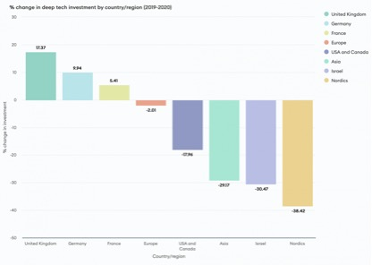

Victor Nadebu
September
23, 2021
The UK has unveiled its
10-year National
Artificial Intelligence Strategy with the aim of securing the
country’s place as “a global AI superpower”.
DeepMind, Benevolent AI, Graphcore, Darktrace, Oxbotica,
and Behavox are just some of the companies that have
established the UK’s place as Europe’s leader in AI.
Joanna Shields, CEO of Benevolent AI
and Co-Chair of Global Partnership on Artificial Intelligence (GPAI),
commented: “A comprehensive strategy and vision for how we drive innovation,
economic growth, job creation and social good. AI, successfully and ethically
deployed, could become a foundational technology for the future growth of our
economy and protecting our security and society.”
Demis Hassabis, Founder and CEO of
DeepMind, said: “AI could deliver transformational benefits for the UK and the
world—accelerating discoveries in science and unlocking progress on key
challenges facing society.”
Data released by Tech Nation
highlights the UK now has more than 1,300 AI companies – a 600 percent increase
over the last decade – with a collective turnover of almost $2B and employing
more than 30,000 people. The country is ranked third in the world for private
venture capital investment into AI companies.
While “deep tech” investments are
slowing or even decreasing in many countries and regions, it continues to
increase substantially in the UK:

Data this week showed that global
investors poured £13.5 billion into more than 1,400 UK private technology firms
between January and June this year—more than Germany, France, and Israel
combined.
However, not to become complacent,
the UK launched its 10-year strategy on the third day of London Tech Week. In
addition to setting out how it plans to continue developing AI technologies, it
also includes plans for a whitepaper on AI regulation to ensure leadership in
safe and ethical deployments.
Chris Philp, DCMS Minister, said:
“Artificial intelligence technologies
generate billions for the economy and improve our lives. They power the
technology we use on a daily basis and help save lives through better disease
diagnosis and drug discovery.
The UK already punches above its weight
internationally and we are ranked third in the world behind the USA and China
in the list of top countries for AI.
Today, we’re laying the foundations for the
next ten years’ growth with a strategy to help us seize the potential of
artificial intelligence and play a leading role in shaping the way the world
governs it.”
Among the initiatives is the
creation of a new National AI Research and Innovation program that will enhance
coordination and collaboration between researchers.
Another program focuses on
increasing AI development outside of London and Southeast England, where the
vast majority of the country’s related efforts are concentrated.
Further government investment may
also be allocated to incentivise the adoption of AI
technologies in industries that are currently not taking full advantage, such
as farming and energy production.
Other plans include:
Professor Sir Adrian Smith, Chief
Executive of The Alan Turing Institute, said:
“We are proud of creating a dynamic,
collaborative community of diverse researchers and are growing world-leading
capabilities in responsible, safe, ethical and inclusive AI research and
innovation.
These technologies are already improving
lives and their prominence continues to grow in our society. To ensure they go
from strength to strength it’s critical we foster a sustainable, inclusive,
multidisciplinary UK AI ecosystem that attracts people from all walks of life
and allows them to flourish.”
While the AI strategy has been
broadly welcomed, there is some concern that it doesn’t appear to go far enough
in addressing some impending societal issues—especially regarding the impact on
people’s jobs and livelihoods.
James McLeod, VP of EMEA at Faethm AI, commented:
“AI is as much a social revolution as it is
technological. While a targeted AI strategy is absolutely welcome, it is
debatable if it addresses the human changes needed to turn the UK into a
fully-fledged, AI-driven economy. Yes, it will create the right foundations and
frameworks to push AI forward and help the country take leadership in the
space, but we mustn’t forget how workforces in many sectors of the economy will
be affected by the innovations it drives.
Technology is already automating and
augmenting a huge range of repetitive tasks that don’t require human skills,
and will inevitably take on even more in future. So, as well as helping AI and
automation create jobs, we also need to think about those who could be left
behind or displaced by its introduction, both now and in the coming years.
What employers need is the means to retain,
retrain and redeploy employees so technology doesn’t simply replace human
workers, but complements them. Targeted training programmes
that help citizens develop skills that enhance the human characteristics of
work, instead of ones that will become redundant in just a few years’ time as
AI continues to evolve, are critical.
If the UK wants to create a future of work
that is fair and sustainable, while pursuing a position as a global leader in
technology and innovation, this is that chance.”
Just a week after the announcement
of AUKUS to counter China’s increasingly aggressive behaviour,
the launch of the AI strategy feels like it may also be in part to keep pace
with the country’s increasing capabilities in the field.
The US currently files the most AI
patent applications, filing around 50,000 between 1998 and 2017. China was not
far behind, having filed around 41,000 over the same period.
In March, former Google CEO Eric
Schmidt said that China could soon replace the US as the world’s leading AI
superpower and warned that has serious implications.
“America is not prepared to defend
or compete in the AI era,” said Schmidt, alongside experts in a National
Security Commission on AI. “This is the tough reality we must face.”